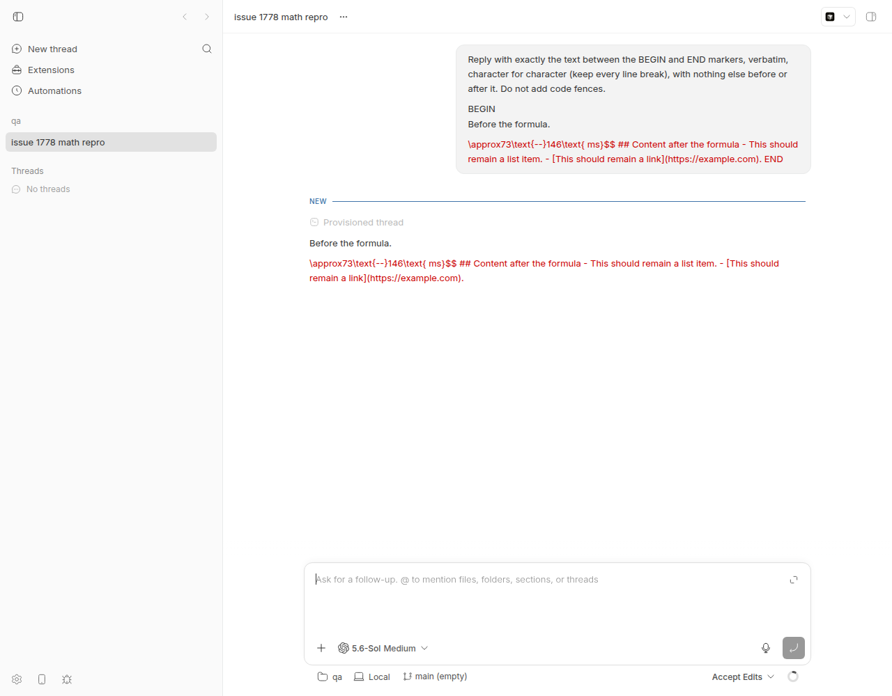
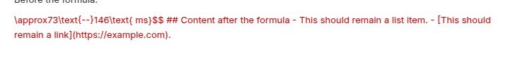
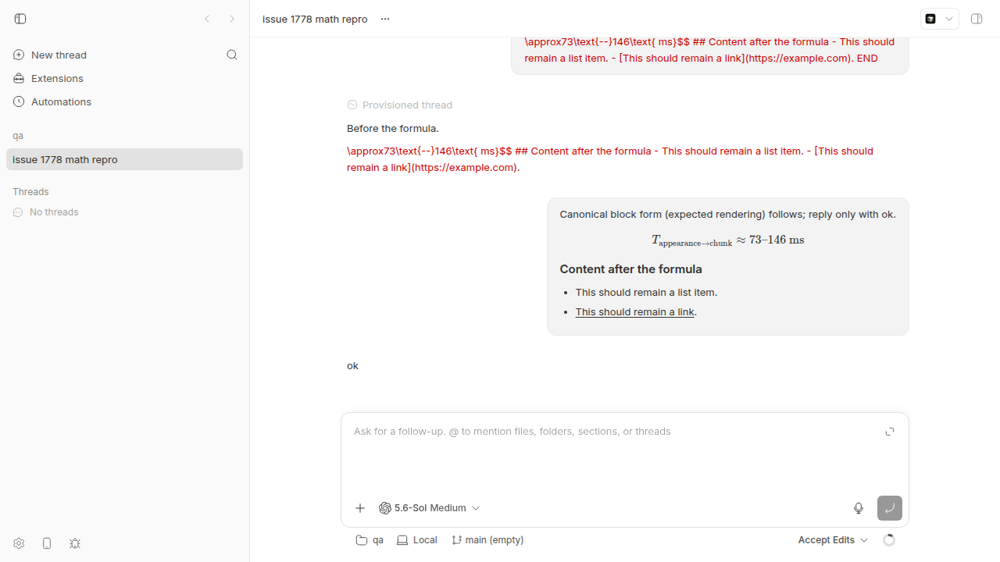

#1778 · Malformed multiline $$ math is not closed by trailing $$: the parser consumes the rest of the message into one .katex-error
Verdict: REPRODUCED · Root-cause confidence: high
1. TL;DR
When an assistant (or user) message contains a display formula written as $$T_… on one line and …ms}$$ at the end of the next line, bb renders everything from the second line of the formula to the end of the message as one red .katex-error block: the heading, list and link that follow lose all Markdown structure. In addition the first line of the formula silently disappears. The cause is in the parser bb uses for math: remark-math → micromark-extension-math treats a line that starts with $$ and has text after it as the opening fence of a display-math block (the text is stored as the block's meta, like a code-fence info string, and is dropped from rendering), and it only accepts a closing fence that is $$ alone on its own line. A trailing $$ at the end of a content line is just content, so the block never closes and, like an unclosed code fence, runs to the end of the document. bb does nothing to normalise or localise this, so one malformed formula destroys the rest of the message. Reproduced on the base commit with a failing vitest and in the live app with a real Codex turn; a ~90-line pre-parse normaliser fixes it (prototype patch included).
2. Claims vs findings
| Claim from the issue | Status | Evidence |
|---|---|---|
The given message shape renders as one giant .katex-error swallowing heading, list and link. | Verified | Live app screenshot (overview); DOM dump shows a single span.katex-error containing the whole suffix; repro vitest fails at base. |
remark-math treats the leading $$ as an opening delimiter but does not recognise the trailing $$ as closing. | Verified | micromark-extension-math/lib/math-flow.js: meta() accepts any non-$ text after the opening fence; tokenizeClosingFence requires $$ + optional whitespace + EOL. mdast dump below shows one math node spanning lines 3–9. |
The KaTeX error is typically Can't use function '$' in math mode. | Verified | title="ParseError: KaTeX parse error: Can't use function '$' in math mode at position 32: …-}146\text{ ms}$̲$\n\n## Content a…" in the rendered DOM. |
| Observed on bb 0.38.0. | Verified (still present) | Reproduced at base c7c66423d (package version 0.39.0) and origin/main c4a3dc5fb; no commits touch the math pipeline since. |
| ~3,000 characters were consumed in the observed case. | Unverified | Depends on the original message; the mechanism confirms the error spans to end of document (or enclosing container). |
Existing tests only assert that a .katex-error exists, not that it stays local. | Verified | markdown-preview.test.tsx#L499-L508 ("contains invalid TeX instead of throwing") — that case is an inline unclosed $$, which micromark leaves as literal text, so it never exercised the flow-fence path. |
| (Not claimed) The first formula line is also lost. | New finding | mdast dump: meta: "T_{\text{appearance}\rightarrow\text{chunk}}", value starts at \approx73…; mdast-util-math ignores meta when building the hast <code class="language-math">, so KaTeX never sees that line. Screenshot confirms: the red text starts at \approx73. |
{kind=link}
3. Environment
- bb worktree at
c4a3dc5fb(origin/main, 3 mobile-only commits after basec7c66423d;git diff c7c66423d c4a3dc5fb --stattouches onlyapps/mobile/…); package version 0.39.0. - Linux bee 7.0.0-29-generic x86_64, Node v24.18.0;
remark-math@6.0.0,micromark-extension-math@3.1.0,mdast-util-math@3.0.0,rehype-katex@7.0.1,katex@0.16.47. - Provider for the live repro: codex (codex-cli 0.148.0, model 5.6-Sol Medium) — one tiny echo turn plus one "ok" turn.
- Dev instance: App
http://localhost:18548, Serverhttp://localhost:26548, Host daemon127.0.0.1:34548, data dir~/.bb-dev/projects-bb-.claude-worktrees-wf_926b3193-f6c-14-e735147cd39f(deleted at cleanup). Headless Chrome viadoobie.
4. Minimal reproduction
4a. Unit-level (no provider needed, ~3 s)
- Save the test below as
apps/app/src/components/ui/markdown-preview.issue-1778.test.tsx(also at 1778/repro/markdown-preview.issue-1778.test.tsx). - Run
cd apps/app && pnpm exec vitest run src/components/ui/markdown-preview.issue-1778.test.tsx
- Expected: the
<h2>, two<li>and the link are rendered after the formula. Actual (base commit, vitest-base.log):FAIL src/components/ui/markdown-preview.issue-1778.test.tsx > issue #1778: trailing `$$` does not close a multiline math block > keeps the heading, list and link after the formula as Markdown AssertionError: expected undefined to be 'Content after the formula' // Object.is equality - Expected: "Content after the formula" + Received: undefined ❯ src/components/ui/markdown-preview.issue-1778.test.tsx:35:56 33| 34| // The structure after the formula must survive. 35| expect(container.querySelector("h2")?.textContent).toBe( | ^ 36| "Content after the formula", 37| ); ⎯⎯⎯⎯⎯⎯⎯⎯⎯⎯⎯⎯⎯⎯⎯⎯⎯⎯⎯⎯⎯⎯⎯⎯[1/1]⎯There is noh2at all — the heading text lives inside the.katex-errorspan.
// @vitest-environment jsdom
// Repro for get-bb/bb#1778: `$$` opened at the start of a line with TeX on
// the same line and closed by a trailing `$$` at the end of a later line.
// `micromark-extension-math` treats this as a math *flow* fence whose
// closing fence must sit alone on its own line, so the block never closes
// and everything after it (heading, list, link) becomes math content.
import { cleanup, render, waitFor } from "@testing-library/react";
import { afterEach, describe, expect, it } from "vitest";
import { MarkdownPreview } from "./markdown-preview";
afterEach(() => cleanup());
const ISSUE_BODY = [
"Before the formula.",
"",
"$$T_{\\text{appearance}\\rightarrow\\text{chunk}}",
"\\approx73\\text{--}146\\text{ ms}$$",
"",
"## Content after the formula",
"",
"- This should remain a list item.",
"- [This should remain a link](https://example.com).",
].join("\n");
describe("issue #1778: trailing `$$` does not close a multiline math block", () => {
it("keeps the heading, list and link after the formula as Markdown", async () => {
const { container } = render(<MarkdownPreview content={ISSUE_BODY} />);
// KaTeX is lazy-loaded; wait until it rendered *something* for the formula.
await waitFor(() =>
expect(container.querySelector(".katex, .katex-error")).not.toBeNull(),
);
// The structure after the formula must survive.
expect(container.querySelector("h2")?.textContent).toBe(
"Content after the formula",
);
expect(container.querySelectorAll("li")).toHaveLength(2);
expect(
container.querySelector('a[href="https://example.com"]')?.textContent,
).toBe("This should remain a link");
// And no single katex-error may swallow the suffix.
const errorText =
container.querySelector(".katex-error")?.textContent ?? "";
expect(errorText).not.toContain("Content after the formula");
});
});
4b. What the parser produces (mdast)
Running the exact bb remark pipeline (remark-parse + remark-gfm + remark-math {singleDollarTextMath:false}) on the issue body — script: mdast-dump.mjs (copy into apps/app/ and run with node):
{
"type": "paragraph",
"lines": "1-1"
}
{
"type": "math",
"lines": "3-9",
"meta": "T_{\\text{appearance}\\rightarrow\\text{chunk}}",
"value": "\\approx73\\text{--}146\\text{ ms}$$\n\n## Content after the formula\n\n- This should remain a list item.\n- [This should remain a link](https://example.com)."
}
One math node covers lines 3–9. The first TeX line is in meta (discarded by the renderer); the trailing $$, the heading and the list are in value.
Other shapes (mdast-variants.mjs), showing exactly which ones are broken:
A issue shape: $$x\n y$$
-> math(meta="T_{a}", value="\\approx 73$$\n\n## After\n\n- item")
B open alone, close trailing: $$\n x$$
-> math(meta=null, value="\\frac{1}{2}$$\n\n## After\n\n- item")
C open trailing, close alone: $$x\n$$
-> math(meta="\\frac{1}{2}", value="") | heading | list
D canonical block: $$\n x \n$$
-> math(meta=null, value="\\frac{1}{2}") | heading | list
E one line $$x$$
-> paragraph[inlineMath("\\frac{1}{2}")] | heading | list
F one line with space $$ x $$
-> paragraph[inlineMath("\\frac{1}{2}")] | heading | list
G unclosed inline inside paragraph
-> paragraph[text] | heading | list
A and B swallow the suffix (the issue). C silently renders an empty formula (meta dropped) but keeps the rest. D, E, F are fine. G (unclosed inline $$, the shape the existing test covers) stays literal text, which is why the existing test never caught this.
4c. Live app (what the user sees)
scripts/bb-dev-app current; create a project; spawn a codex thread whose prompt asks the model to echo the issue body verbatim (spawn.sh, prompt.txt). The assistant message event contained exactly the issue body (see Appendix).- Open the thread in the browser.

\approx73\text{--}146\text{ ms}$$ ## Content after the formula - This should remain a list item. - [This should remain a link](https://example.com). No heading, no bullets, no link, and the first formula line T_{\text{appearance}…} is missing entirely.
span.katex-error.
$$ alone on its own lines before and after) renders the KaTeX display formula, the heading, the bullets and the link correctly. Only the delimiter placement differs.Rendered DOM of the assistant message (assistant-message-dom.txt):
"html": "<p class=\"mb-2 text-foreground last:mb-0\">Before the formula.</p>\n<span class=\"katex-error\" title=\"ParseError: KaTeX parse error: Can't use function '$' in math mode at position 32: …-}146\\text{ ms}$̲$\n\n## Content a…\" style=\"color: rgb(204, 0, 0);\">\\approx73\\text{--}146\\text{ ms}$$\n\n## Content after the formula\n\n- This should remain a list item.\n- [This should remain a link](https://example.com).</span>"
}
Repro files: 1778/repro/
5. Root cause
bb's markdown renderer wires remark-math with only single-dollar math disabled (markdown-preview.tsx#L1786-L1791; the mobile app does the same at apps/mobile/src/markdown/parse.ts#L58-L63) and passes the message text straight to it. The tokenizer behind remark-math (micromark-extension-math@3.1.0, lib/math-flow.js) models $$ display math exactly like a fenced code block:
- Opening: at the start of a line,
$$then optional whitespace then meta.meta()consumes any characters up to EOL and only bails (nok) if it meets another$. So$$T_{\text{appearance}\rightarrow\text{chunk}}is a valid opening fence with metaT_{…}, whereas$$x$$on one line is rejected as flow (meta contains$) and falls through to inline text math — which is why shapes E/F work. - Closing:
tokenizeClosingFenceis attempted only at the start of a line: optional indent, ≥2$, optional whitespace, then EOL, otherwisenok.\approx73\text{ ms}$$therefore is ordinary content (contentChunkconsumes to EOL). - Termination: with no closing fence the block continues through every non-lazy line until EOF / end of the enclosing container (same as an unclosed ``` fence in CommonMark). That is the "swallows the rest of the message" symptom.
- Meta is dropped:
mdast-util-mathstores the opening-line text asnode.metaand builds the hast<pre><code class="language-math math-display">fromvalueonly (exitMathFlow).rehype-katexrenders that element, so the first TeX line vanishes and KaTeX chokes on the$$inside the value → one.katex-error(defaultthrowOnError:false, rederrorColor) holding the full suffix.
Nothing in bb pre-normalises the delimiters or post-processes an unclosed math node, so the upstream parser's fence semantics leak straight into the UI. The deeper issue is that the LaTeX convention $$ … $$ allows the delimiters to be glued to content on either side, while CommonMark-style fences do not; LLM output uses the LaTeX convention constantly (shapes A/B/C above), so this is not an edge case. The same bug exists in the mobile renderer (apps/mobile/src/markdown/parse.ts), which uses the identical pipeline.
6. Proposed fix (first principles)
Fix at the point where bb hands text to the parser: add a small, pure normalizeMathFences(markdown) pass (in apps/app/src/components/ui/, shared with mobile) that rewrites LaTeX-style display spans into the canonical fence shape before remark-math sees them. Rules, in order, skipping fenced code blocks:
- A line matching
^ {0,3}\$\$[ \t]*([^$]+)$(opening with meta — exactly what micromark would treat as an opening fence) or a bare$$line starts a span. - The span closes at the first later line that is either a bare
$$or ends with$$(and does not start with it). If no such line exists, leave the text alone (it is genuinely unclosed). - Emit
$$, then the meta text on its own line (this also fixes shape C, where the formula currently renders empty), the body lines, the closer's content, and$$on its own line.
I prototyped exactly this (prototype-fix.patch: new markdown-math-fences.ts + a 3-line call in MarkdownPreview's body memo). With it, the repro test and the existing markdown-preview.test.tsx suite pass (18/18, log) and turbo typecheck --filter=@bb/app is clean. Inline $$x$$ is untouched because the opener pattern rejects a remainder containing $, and single-dollar handling is unaffected. Risks: (a) a legitimate $$asciimath meta line would now be treated as TeX — bb never used meta, and mdast-util-math drops it anyway, so nothing regresses; (b) math inside blockquotes / list items with a > or - prefix is not normalised by the prototype (it only handles ≤3 spaces of indent) — extend the prefix handling or accept; (c) while streaming, a partially received block has no closer yet, so it stays unnormalised until the closer arrives and then flips to canonical form — the same transient as today's unclosed-fence behaviour, no worse.
Alternative (more robust, more code): ship a custom micromark construct that replaces mathFlow and accepts a closing $$ at the end of a content line. Either way, add the regression test above plus shapes B and C to markdown-preview.test.tsx, and apply the same normaliser in apps/mobile/src/markdown/parse.ts.
7. PR review
No open PRs are linked to this issue.
8. Related issues
- #511 / PR #512 — disabled single-dollar math; the comment in
markdown-preview.tsxdocuments why only$$is honoured. - #441 / PR #442 — original KaTeX support.
- PR #1891 — lazy-loads KaTeX; unrelated to parsing but the last change to the math pipeline.
- Upstream:
micromark-extension-mathdocuments that display math works "like fenced code" (closing fence on its own line); this is a known design choice, not something bb can configure.
9. Appendix
Assistant message event from the live thread (verbatim text)
"text": "Before the formula.\n\n$$T_{\\text{appearance}\\rightarrow\\text{chunk}}\n\\approx73\\text{--}146\\text{ ms}$$\n\n## Content after the formula\n\n- This should remain a list item.\n- [This should remain a link](https://example.com)."
Prototype fix patch
diff --git a/apps/app/src/components/ui/markdown-preview.tsx b/apps/app/src/components/ui/markdown-preview.tsx
index 5b3e27243..a4b7e224f 100644
--- a/apps/app/src/components/ui/markdown-preview.tsx
+++ b/apps/app/src/components/ui/markdown-preview.tsx
@@ -37,6 +37,7 @@ import rehypeSanitize from "rehype-sanitize";
import remarkBreaks from "remark-breaks";
import remarkGfm from "remark-gfm";
import remarkMath from "remark-math";
+import { normalizeMathFences } from "./markdown-math-fences.js";
import { ImageLightbox } from "./image-lightbox.js";
import {
markdownMayContainMath,
@@ -1718,10 +1719,10 @@ function MarkdownPreviewComponent({
: markdownContent,
[markdownContent, promptMentions],
);
- const { frontmatter, body } = useMemo(
- () => splitMarkdownFrontmatter(promptMarkdownContent),
- [promptMarkdownContent],
- );
+ const { frontmatter, body } = useMemo(() => {
+ const split = splitMarkdownFrontmatter(promptMarkdownContent);
+ return { ...split, body: normalizeMathFences(split.body) };
+ }, [promptMarkdownContent]);
// The remark transform fills this shared mount table on every parse. Keep it
// stable while assistant text streams so the custom React component type
// also stays stable and an already-complete directive does not remount when
diff --git a/apps/app/src/components/ui/markdown-math-fences.ts b/apps/app/src/components/ui/markdown-math-fences.ts
new file mode 100644
index 000000000..bc37c48e4
--- /dev/null
+++ b/apps/app/src/components/ui/markdown-math-fences.ts
@@ -0,0 +1,97 @@
+// Prototype fix for get-bb/bb#1778 (report artifact, not shipped).
+//
+// `micromark-extension-math` only recognises a display-math *closing* fence
+// when `$$` sits alone on its own line. Models frequently emit
+//
+// $$T_{a} <- opening fence with TeX on the same line ("meta")
+// \approx 73$$ <- closing fence glued to the last content line
+//
+// which opens a flow block that never closes, so the remainder of the message
+// is swallowed into one math node (and the first line is dropped as `meta`).
+// Normalise such spans to the canonical shape before parsing:
+//
+// $$
+// T_{a}
+// \approx 73
+// $$
+//
+// Anything inside a fenced code block is left untouched. Inline `$$x$$` on a
+// single line never matches the opener pattern (the remainder contains `$`),
+// so it keeps being inline math.
+
+const CODE_FENCE = /^ {0,3}(`{3,}|~{3,})/;
+// `$$` at line start (≤3 indent) followed by text without any `$` — exactly
+// the shape micromark treats as an opening fence with meta.
+const OPEN_WITH_META = /^( {0,3})\$\$[ \t]*([^$\n]+?)[ \t]*$/;
+const OPEN_BARE = /^ {0,3}\$\$[ \t]*$/;
+const CLOSE_BARE = /^ {0,3}\$\$[ \t]*$/;
+// A content line that ends with `$$` but does not start with it.
+const CLOSE_TRAILING = /^(.*?[^$\s])[ \t]*\$\$[ \t]*$/;
+
+export function normalizeMathFences(markdown: string): string {
+ if (!markdown.includes("$$")) return markdown;
+ const lines = markdown.split("\n");
+ const out: string[] = [];
+ let inCode: string | null = null;
+ let i = 0;
+ while (i < lines.length) {
+ const line = lines[i] ?? "";
+ const fence = CODE_FENCE.exec(line);
+ if (inCode !== null) {
+ out.push(line);
+ if (fence && fence[1].startsWith(inCode[0]) && fence[1].length >= inCode.length) {
+ inCode = null;
+ }
+ i++;
+ continue;
+ }
+ if (fence) {
+ inCode = fence[1];
+ out.push(line);
+ i++;
+ continue;
+ }
+ const withMeta = OPEN_WITH_META.exec(line);
+ const bare = OPEN_BARE.test(line);
+ if (!withMeta && !bare) {
+ out.push(line);
+ i++;
+ continue;
+ }
+ // Find the closer: first later line that is a bare `$$` or ends in `$$`.
+ let close = -1;
+ let trailing = false;
+ for (let j = i + 1; j < lines.length; j++) {
+ const candidate = lines[j] ?? "";
+ if (CODE_FENCE.test(candidate)) break;
+ if (CLOSE_BARE.test(candidate)) {
+ close = j;
+ break;
+ }
+ if (CLOSE_TRAILING.test(candidate)) {
+ close = j;
+ trailing = true;
+ break;
+ }
+ }
+ if (close === -1) {
+ // Truly unclosed: leave as is (micromark swallows to EOF either way).
+ out.push(line);
+ i++;
+ continue;
+ }
+ const indent = withMeta ? withMeta[1] : "";
+ out.push(`${indent}$$`);
+ if (withMeta) out.push(`${indent}${withMeta[2]}`);
+ for (let j = i + 1; j < close; j++) out.push(lines[j] ?? "");
+ if (trailing) {
+ const match = CLOSE_TRAILING.exec(lines[close] ?? "");
+ out.push(match ? match[1] : (lines[close] ?? ""));
+ out.push(`${indent}$$`);
+ } else {
+ out.push(lines[close] ?? "");
+ }
+ i = close + 1;
+ }
+ return out.join("\n");
+}
Commands run
pnpm install --frozen-lockfile --prefer-offline
pnpm exec turbo run build --filter=@bb/app^...
cd apps/app && pnpm exec vitest run src/components/ui/markdown-preview.issue-1778.test.tsx # fails at base -> vitest-base.log
cp mdast-dump.mjs apps/app/ && node apps/app/mdast-dump.mjs # -> mdast-dump.out
cp mdast-variants.mjs apps/app/ && node apps/app/mdast-variants.mjs # -> mdast-variants.out
scripts/bb-dev-app current # App :18548 Server :26548 Host daemon :34548
curl -s -X POST http://localhost:26548/api/v1/projects -H 'content-type: application/json' -d '{"name":"qa","source":{"type":"local_path","path":"/tmp/bb-1778-scratch","hostId":"host_26tbywf36d"}}'
bash 1778/repro/spawn.sh # codex thread thr_x9gvs6bkf5 echoing the issue body
doobie --headless < 1778/repro/shot1.js # 1778-thread-overview.png
doobie --headless < 1778/repro/shot2.js # 1778-assistant-message-zoom.png + assistant-message-dom.txt
bash 1778/repro/followup.sh # canonical-form control message
doobie --headless < 1778/repro/shot3.js # 1778-expected-canonical-form.png
# prototype fix applied, then:
cd apps/app && pnpm exec vitest run src/components/ui/markdown-preview.issue-1778.test.tsx src/components/ui/markdown-preview.test.tsx # 18 passed
pnpm exec turbo run typecheck --filter=@bb/app # clean
pnpm dev:stop; rm -rf ~/.bb-dev/projects-bb-.claude-worktrees-wf_926b3193-f6c-14-e735147cd39f /tmp/bb-1778-scratch